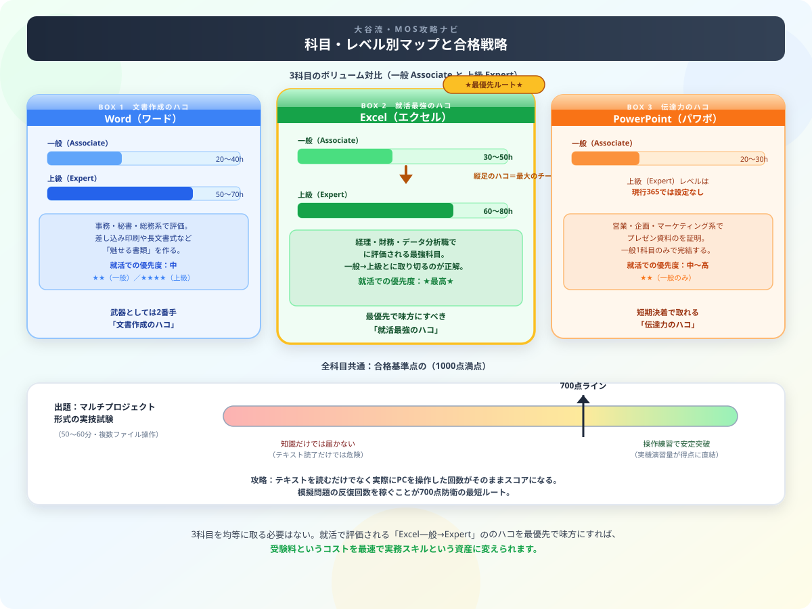

MOS（Microsoft Office Specialist）の独学合格ガイド【2026年版】難易度・勉強時間・おすすめテキスト
『就活や実務の武器になるMOSを取ろう！』と決意してテキストを開いた瞬間……「うわっ、なんじゃこりゃ、科目もレベルも多すぎるし、1科目1万円超えの受験料って高すぎて頭パンクするわ！」とフリーズしていませんか？（笑）
毎日会計や法律の猛勉強と格闘し、Excelを叩きまくっている僕の視点から、かけた費用を最速で実務スキルに変えて回収できる【MOS最速独学逆算スケジュール】を優しくナビゲートします！読み終わったら、記事末尾の【いいねボタン】のプッシュをお願いします。

Word・Excelの一般（Associate）と上級（Expert）のボリューム対比、および合格基準700点の防衛線とコスパ最強ルートを示した戦略マップ
MOS（マイクロソフト オフィス スペシャリスト）はWord・Excel・PowerPoint等のOfficeスキルを証明する国際資格です。就職・転職で求められるOfficeスキルを体系的に証明でき、在宅受験も可能なため社会人・学生問わず人気があります。独学でも1〜2ヶ月で合格できます。上のマップの通り、3科目を均等に取る必要はありません。Excel一般→Expertの「縦のハコ」を最優先で味方につけましょう。
MOS試験の種類と難易度一覧
| 科目 | レベル | 難易度 | 勉強時間 | 合格率目安 |
|---|---|---|---|---|
| Word 365 | 一般（Associate） | ★★ | 20〜40時間 | 約70〜80% |
| Word 365 Expert | 上級（Expert） | ★★★★ | 50〜70時間 | 約45〜55% |
| Excel 365 | 一般（Associate） | ★★★ | 30〜50時間 | 約60〜70% |
| Excel 365 Expert | 上級（Expert） | ★★★★ | 60〜80時間 | 約40〜50% |
| PowerPoint 365 | 一般（Associate・Expertなし） | ★★ | 20〜30時間 | 約70〜80% |
| Access 365 | 一般 | ★★★★ | 50〜80時間 | 約40〜50% |
MOS試験の特徴と出題形式
- マルチプロジェクト形式：複数のファイルを操作する実技形式の試験
- 時間制限：50分（一般）〜60分（上級）
- 合格スコア：1000点満点中700点以上（目安）
- 随時受験：全国のテストセンターで毎日受験可能
- 再受験：不合格後24時間後から再受験OK
Excel 365（一般）1ヶ月合格スケジュール
| 週 | 学習内容 | 目標時間 |
|---|---|---|
| 1週目 | テキスト第1〜2章：基本操作・セル・書式設定 | 8〜10時間 |
| 2週目 | テキスト第3〜4章：関数・グラフ・印刷 | 8〜10時間 |
| 3週目 | テキスト第5〜6章：テーブル・データ整理 | 8〜10時間 |
| 4週目 | 模擬問題を繰り返し・苦手操作の強化 | 8〜10時間 |
おすすめテキスト・教材
| テキスト | 特徴 | 対象 |
|---|---|---|
| FOM出版「よくわかるMOS」シリーズ | 図解が多く分かりやすい。模擬問題付き | 初めて受験する人 |
| 日経BP「MOS攻略問題集」シリーズ | 問題数が多い。本番形式の練習に最適 | 仕上げ段階 |
| Microsoft 365（公式） | 実際のOfficeを使って練習できる | 操作練習に必須 |
合格後のキャリア活用
| 取得資格 | 活用場面 | 評価 |
|---|---|---|
| MOS Excel Expert | 経理・財務・データ分析職 | ★★★★★ |
| MOS Word | 事務・秘書・総務 | ★★★ |
| MOS PowerPoint | 営業・企画・マーケティング | ★★★ |
| MOS Access | データベース管理・IT部門 | ★★★★ |
まとめ
- MOS Excelは就職・転職で最も評価される科目
- テキストを読むより実際の操作練習が合否を決める
- 1日1〜2時間の練習で1ヶ月あれば合格圏内に入れる
- Excel一般→Excel Expertの「縦のハコ」を最優先で取得するのが効率的
- 随時受験できるため自分のペースで受験計画を立てられる
MOSの受験料は決して安くありません。でも、それを「出費」で終わらせるか「実務スキルという資産」に変えられるかは、これからの取り組み方次第です。会計士試験という大きな山と毎日格闘している僕自身、限られた時間とお金をどこに集中投下するかを常に考えています。だからこそ、Excelという最強のハコを縦に極めようとしているあなたは、もう最短ルートに乗っています。
自分の市場価値とPCスキルを高めるために今日も一歩を踏み出しているあなたは、最高の仲間です。この記事が受験科目選びの助けになったなら、この下にある【いいねボタン】をポチッと押してもらえると、執筆のモチベーション維持に本当に励みになります。一緒にExcel Expertというボスを討伐しましょう！